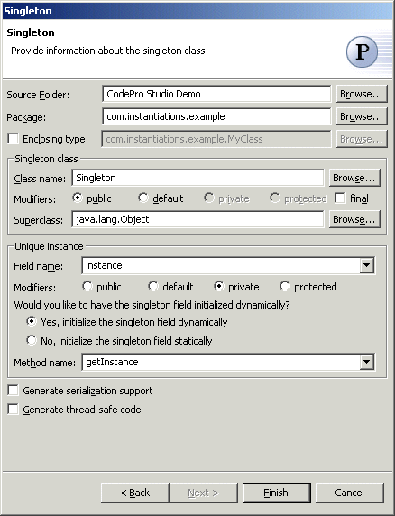

Singleton Pattern
The  Singleton Pattern ensures a class only has one instance, and provide a global point of
access to it. It's important for some classes to have exactly one instance. How do we
ensure that a class has only one instance and that the instance is easily accessible? A
global variable makes an object accessible, but it doesn't keep you from instantiating
multiple objects. A better solution is to make the class itself responsible for keeping
track of its sole instance. The class can ensure that no other instance can be created (by
intercepting requests to create new objects), and it can provide a way to access the
instance. This is the Singleton pattern.
Singleton Pattern ensures a class only has one instance, and provide a global point of
access to it. It's important for some classes to have exactly one instance. How do we
ensure that a class has only one instance and that the instance is easily accessible? A
global variable makes an object accessible, but it doesn't keep you from instantiating
multiple objects. A better solution is to make the class itself responsible for keeping
track of its sole instance. The class can ensure that no other instance can be created (by
intercepting requests to create new objects), and it can provide a way to access the
instance. This is the Singleton pattern.
Wizard

| Option | Description | Default |
| Source folder | Enter a source folder for the new class. Either type a valid source folder path or click Browse to select a source folder via a dialog. | The source folder of the element that was selected when the wizard was started. |
| Package | Enter a package to contain the new class. You can select either this option or the Enclosing Type option, below. Either type a valid package name or click Browse to select a package via a dialog. | The package of the element that was selected when the wizard was started. |
| Enclosing type | Select this option to choose a type in which to enclose the new class. You can select either this option or the Package option, above. Either type a valid name in the field or click Browse to select a type via a dialog. | The type or the primary type of the compilation unit that was selected when the wizard was started or <blank> |
| Class name | Type a name for the new class. | <blank> |
| Modifiers | Select one or more access modifiers for the new class.
|
public |
| Superclass | Type or click Browse to select a superclass for this class. | <java.lang.Object> |
| Field name | Type or select the name of the field that will contain the single instance of the class. | <instance> |
| Field Modifiers | Select one or more access modifiers for the unique instance
filed.
|
private |
| Would you like to have the singleton field initialized dynamically | Select "Yes" to initialize the singleton field dynamically, or select "No" to initialize the singleton field statically. | <Yes>. |
| Method name | Type or select the name of the method that will return the single instance of the class. | <getInstance> |
| Generate serialization support | Determines whether the singleton class will implement the Serializable interface | <false> |
| Generate thread-safe code | Determines whether thread-safe code should be generated . |
<false> |
Applicability
Use the Singleton pattern when
- there must be exactly one instance of a class, and it must be accessible to clients from
a well-known access point.
- when the sole instance should be extensible by subclassing, and clients should be able to use an extended instance without modifying their code.
Additional Resources
http://c2.com/cgi/wiki?SingletonPattern
http://www.wikipedia.org/wiki/Singleton_pattern
http://www.cmcrossroads.com/bradapp/javapats.html#Singleton